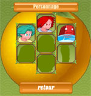
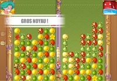
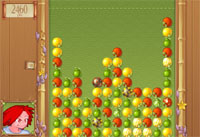

|
|
|
| Jouez en mode Pot-au-feu et découvrez l'Histoire de Swapou2. Combattez en duel les différents personnages qui barrent le chemin de votre quête. | |
| Vous pouvez sélectionner chaque personnage vaincu dans tous les modes de jeux (même en mode Challenge). Chacun d'eux possède ses propres pouvoirs spéciaux ! |  | |
|  | Le mode Duel vous permet de progresser parmi 5 niveaux de difficulté. De "enfantin" à "sauvage", quelle est votre maîtrise de Swapou 2 ? | |
| Comme tous les jeux complets (FD Blanc), Swapou2 vous permet de jouer de façon illimitée à tous les modes, y compris le mode "Entrainement" qui vous permet de battre votre record personnel. |  |
|
|